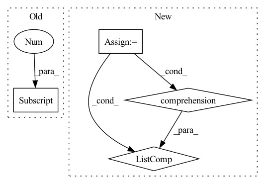

Pattern ID :1159

Before Change
self.cheb_polynomials = cheb_polynomials
self.in_channels = in_channels
self.out_channels = out_channels
self.DEVICE = cheb_polynomials[0].device
self.Theta = nn.ParameterList([nn.Parameter(torch.FloatTensor(in_channels, out_channels).to(self.DEVICE)) for _ in range(K)])
def forward(self, x, spatial_attention):
After Change
W = to_scipy_sparse_matrix(edge_index)
assert W.shape[0] == W.shape[1]
D = np.diag(np.sum(W, axis=1))
L = np.array(D - W.toarray())
lambda_max = eigs(L, k=1, which="LR")[0].real
L_tilde = (2 * L) / lambda_max - np.identity(W.shape[0])
cheb_polynomials = [np.identity(L_tilde.shape[0]), L_tilde.copy()]
for i in range(2, K):
cheb_polynomials.append(2 * L_tilde * cheb_polynomials[i - 1] - cheb_polynomials[i - 2])
self.cheb_polynomials = [torch.from_numpy(i).type(torch.FloatTensor).to(DEVICE) for i in cheb_polynomials]
self.in_channels = in_channels
self.out_channels = out_channels
self.DEVICE = DEVICE
self.Theta = nn.ParameterList([nn.Parameter(torch.FloatTensor(in_channels, out_channels).to(self.DEVICE)) for _ in range(K)])
In pattern: SUPERPATTERN
Frequency: 3
Non-data size: 4
Instances
Fragment ID: 2268962
Project Name: benedekrozemberczki/pytorch_geometric_temporal
Commit Name: 2775ce5253580a592becb764f1a76d82c8e76e6e
Time: 2021-03-17
Author: He_YX@outlook.com
File Name: torch_geometric_temporal/nn/convolutional/astgcn.py
Class Name: cheb_conv_withSAt
Method Name: __init__
Parent Class: nn.Module
Fragment ID: 2268961
Project Name: clovaai/rexnet
Commit Name: 104f2184754d97b8050f24bdf39f650b3e80cad8
Time: 2020-08-04
Author: dongyoon.han@navercorp.com
File Name: rexnetv1.py
Class Name: ReXNetV1
Method Name: __init__
Parent Class: nn.Module
Fragment ID: 2268966
Project Name: feng-lab/pytorch-image-models
Commit Name: c6e4b7895a7dbcd9b98396cbef383dd1c72b0ad3
Time: 2022-02-23
Author: rwightman@gmail.com
File Name: timm/models/swin_transformer_v2_cr.py
Class Name: SwinTransformerV2CR
Method Name: __init__
Parent Class: nn.Module